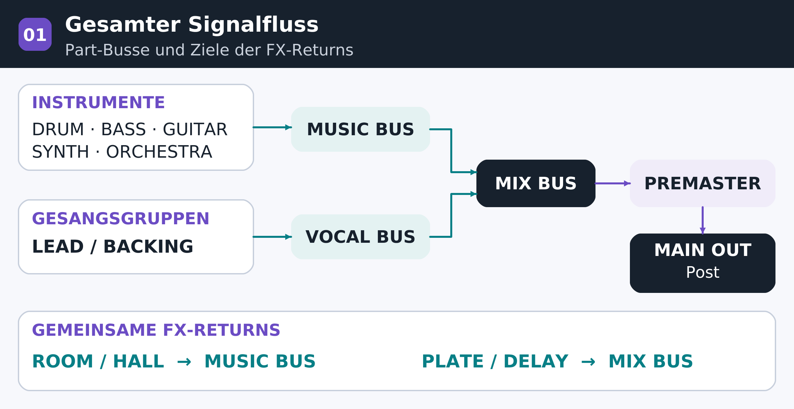
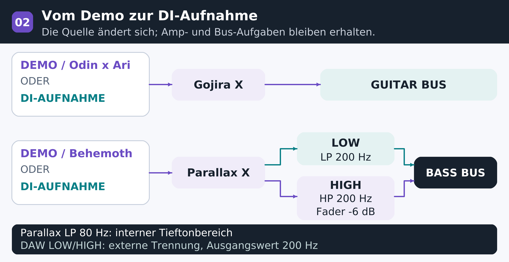
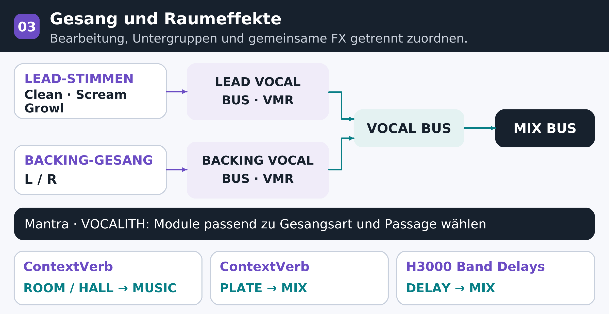
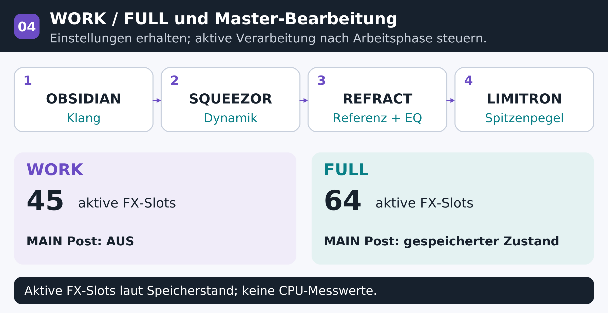

DEADWIRE / PRODUKTIONSFORSCHUNG
DAW-Vorlage mit Schwerpunkt Develop Device
Aufbau und Betriebsstandards
FORSCHUNGSTAGEBUCH / 29.10.2026 / v1.3
Ziel der Arbeitsvorlage
Eine gemeinsame Arbeitsumgebung vereinheitlicht die Produktion von DEADWIRE: Gitarren und Bass in Drop A, verschiedene Gesangstechniken, Klavier und Orchester. Feste Aufgaben für Instrumente und Plug-ins reduzieren wiederkehrende Einrichtungsschritte. Dadurch bleibt mehr Zeit für Arrangement, Spielweise und Klangentscheidungen.
QUELLEN
Gitarren-/Bass-DI · Demos: Odin x Ari / Behemoth
PROZESS
OBSIDIAN · SQUEEZOR · VOCALITH · VMR
AUSGABE
WORK / FULL · Pegelabgleich · Ausgangsprüfung
Referenzprojekt: Varg av Valkyria
7-saitige Gitarre in Drop A · 5-saitiger Bass in Drop A · Studio One / Studio Pro
01 / ZIELSETZUNG
Ziel der Arbeitsvorlage
Eine gemeinsame Arbeitsumgebung für wiederholbare DEADWIRE-Produktionen
Die Besetzung von DEADWIRE umfasst 7-saitige Gitarren und 5-saitigen Bass in Drop A sowie Klavier, Orchester, Synthesizer, Clean-Gesang, Screams und Growls. Eine gemeinsame Arbeitsumgebung schafft für jeden Song denselben Ausgangspunkt und ermöglicht eine konsistente Beurteilung des Albumklangs.
Die Vorlage reduziert wiederkehrende Aufgaben beim Laden von Instrumenten und Verbinden von Bussen und Raumeffekten. Festgelegte Signalwege und Bearbeitungsaufgaben schaffen Raum für musikalische Entscheidungen: das Verhältnis von Riffs und Gesang, das Fundament im Bassbereich und die Entwicklung des Orchesters.
Gitarren und Bass verwenden eine durchgängige Struktur vom Demo bis zur Aufnahme. Odin x Ari und Behemoth dienen ausschließlich zur Prüfung von Komposition und Arrangement im Demo. Reale Aufnahmen verwenden DI-Audio von Gitarre und Bass mit derselben nachfolgenden Amp- und Busstruktur.
Vorhandene Werkzeuge als konsistenter Produktionsstandard
Der bisherige Einsatz der iZotope-Ozone-Serie wird durch eine Arbeitsstruktur mit Schwerpunkt Develop Device weiterentwickelt. Bereits erworbene Werkzeuge werden von der Einzelspurbearbeitung bis zum Ausgang eingesetzt. Auswahlgründe und Aufgaben jedes Produkts bilden einheitliche Entscheidungskriterien für weitere Songs.
| Produktionsziel | Umsetzung in der Vorlage |
|---|---|
| Weniger Vorbereitung | Instrumente, Gruppenbusse und gemeinsame FX schaffen denselben Ausgangspunkt für jeden Song. |
| Getrennte Kontrolle | Bass LOW/HIGH, Lead/Backing, Clean/Scream/Growl und Drum-Mikrofongruppen bleiben getrennt. |
| Konsistenz zwischen Songs | Kanalnamen, Ausgänge und Vergleichskriterien bleiben erhalten; Werte werden neuen Quellen angepasst. |
| Betrieb je Arbeitsphase | WORK und FULL erhalten Einstellungen und Originale; nur benötigte Bearbeitung wird aktiviert. |
Grundlage: Besetzung, vorhandene Werkzeuge und Produktionsanforderungen von DEADWIRE. Referenzvorlage [2].
02 / UMSTELLUNG
Von Ozone zu Develop Device
Vorhandene Werkzeuge bilden gemeinsame Standards für Quellen, Busse, Raumeffekte und Master.
In der bisherigen Produktionsumgebung wurde die iZotope-Ozone-Serie eingesetzt. Die neue Vorlage stellt Develop Device in den Mittelpunkt, um vorhandene Produkte und Presets breiter zu nutzen und gemeinsame Arbeitskriterien von der Instrumentenbearbeitung über Busse und Raumeffekte bis zum Ausgang zu etablieren.
Tiefe Gitarren und Bass, verschiedene Gesangstechniken, Klavier und Orchester erfordern unterschiedliche Bearbeitung. Festgelegte Aufgaben und Buszuordnungen ermöglichen es, dieselbe Struktur songübergreifend zu nutzen und den Fokus auf Quellen und Arrangement zu richten.
Vier Prioritäten der Umstellung
| Auswahlkriterium | Begründung des Develop-Device-Schwerpunkts |
|---|---|
| Vorhandene Ressourcen | Erworbene Plug-ins, Presets und IRs dienen als Ausgangspunkt pro Part. Weniger Neuaufbau von Ketten schafft Zeit für die Anpassung an den Song. |
| Einheitliche Kriterien | OBSIDIAN und SQUEEZOR liegen auf Spuren, Bussen und Master. Ihre Bedienung bleibt gleich; EQ- und Kompressionsaufgaben unterscheiden sich je Position. |
| Verbundene Aufgaben | VOCALITH bearbeitet Gesang, ContextVerb gemeinsame Räume. REFRACT und LIMITRON übernehmen Analyse, Klang und Ausgang im Master. |
| Wiederverwendung und Aufnahme | Odin-/Behemoth-Demos und reale DI-Aufnahmen nutzen dieselbe Amp-/Busstruktur. Die Aufgaben bleiben erhalten; Einstellungen folgen Eingang und Song. |
Klare Aufgaben auch im Master
Die Master-Post-Kette umfasst OBSIDIAN für die Gesamtklangkorrektur, SQUEEZOR für die Dynamik, REFRACT für Referenzanalyse und EQ sowie LIMITRON für Spitzen- und Ausgangspegel. Jede Stufe arbeitet bedarfsgerecht auf Grundlage der bereits auf Einzelspuren und Bussen hergestellten Balance.
Hintergrund: bisheriger Ozone-Einsatz und Nutzung vorhandener Develop-Device-Produkte. Aufgaben und Positionen [1,2].
03 / INSTRUMENTENAUSWAHL
Auswahl der sechs virtuellen Instrumente
Auswahlkriterien sind Bearbeitbarkeit, Funktion im Arrangement und Wiederverwendung vorhandener Presets.
Odin x Ari und Behemoth dienen der MIDI-Bearbeitung von Gitarren- und Bassdemos. Reale Aufnahmen verwenden DI-Audio. Drums, Klavier, Synthesizer und Streicher werden entsprechend der Aufgabe der jeweiligen Klangquelle eingesetzt.
| Instrument | Auswahlgrund | Zugeordneter Part |
|---|---|---|
| Odin x Ari | Demo-Instrument zur MIDI-Bearbeitung von Riffs und Artikulation. Gojira X dient der Klangprüfung; reale Aufnahmen verwenden Gitarren-DI. | Gitarrendemos Rhythmus/Quad/Lead |
| Behemoth Bass | MIDI-Bearbeitung von Tonhöhe, Timing und Dynamik in Drop-A-Demos mit Parallax X. Reale Aufnahmen verwenden Bass-DI. | Bassdemos BASS MIDI |
| Divine Destruction Drums | Close, OH, Room und Balcony lassen sich pro Part intern regeln und in der DAW auf acht Stems zusammenführen. | Gesamtes Drumset 8 Stereo-Stems |
| Serum 2 | Nutzung vorhandener Develop-Device-Presets; Attack, Release und Obertöne von Pads/Synths werden dem Arrangement angepasst. | PAD 1/2 Streicheroption |
| Omnisphere 3 | Erweitert Basssynth- und Atmosphärenklänge. Aktuell BASS SYNTH zugeordnet; zusätzlich eine Option für Streicherklänge. | BASS SYNTH Streicheroption |
| Arturia Piano V3 | Erhält den melodischen und harmonischen Mittelpunkt beim Übergang von Klavier zu Orchester und Metal. | Klavier ORCHESTRA BUS |
Gemeinsame Verarbeitung für Demo und DI-Aufnahme
Demos verwenden Odin und Behemoth, reale Aufnahmen eingespielte DI-Signale. Gitarren durchlaufen Gojira X und GUITAR BUS; Bass durchläuft Parallax X, LOW/HIGH und BASS BUS. Beim Quellenwechsel werden Eingangspegel und Klang neu abgestimmt.
Die sechs geladenen Instrumente und die Verbindung von Arturia Piano V3 zum ORCHESTRA BUS wurden in [2] geprüft.
04 / KLANG & DYNAMIK
Auswahl für Klang und Dynamik
Die Aufgaben reichen vom Charakter der Quelle bis zur Kontrolle des endgültigen Ausgangs.
Die Aufgabe eines Produkts hängt von seiner Position ab. Amps prägen die Quelle, EQs ordnen Frequenzverhältnisse, Kompressoren formen Dynamik und Zusammenhalt. Die Master-Nachbearbeitung kontrolliert Gesamtklang und Ausgang.
| Effekt | Auswahlgrund | Position |
|---|---|---|
| Gojira X | Gemeinsame Amp-/Cabinet-Umgebung für reale Gitarren-DI und Odin-Demos; vorhandene Gojira-Presets und IRs werden einbezogen. | Gitarren-DI/Demo Quellkanal |
| Parallax X | Separate Tiefenkompression und Mitten-/Höhenverzerrung ermöglichen die gemeinsame Kontrolle von Fundament und Riff-Artikulation in Drop A. | Bassquelle Vor LOW/HIGH |
| OBSIDIAN | Gemeinsame EQ-Umgebung für Instrumentenkorrektur, Bass-Bandtrennung sowie Balance und Resonanzen auf Bussen und FX-Returns. | Instrumente/Busse FX-Returns/Master |
| SQUEEZOR | Einheitliche Bedienung für unterschiedliche Aufgaben: Spurdynamik, Buszusammenhalt und parallele Drum-Verdichtung. | Drums/Bass Busse/Master |
| REFRACT | Verbindet Referenzanalyse und EQ in einer eigenen Stufe zur Beurteilung der gesamten Klangrichtung. | MAIN OUT Post |
| LIMITRON | Trennt die endgültige Spitzen- und Ausgangskontrolle von der übrigen Klang- und Dynamikbearbeitung. | MAIN OUT Post Letzte Ausgangsstufe |
Ein Werkzeug, mehrere klar definierte Aufgaben
OBSIDIAN und SQUEEZOR vereinheitlichen die Bedienung wiederkehrender EQ- und Kompressionsaufgaben. Für Kick, Bass, Gitarrenbus und Master werden jeweils passende Frequenzbereiche und Reaktionszeiten eingestellt.
Produktpositionen und Ketten [2]. Interne Bandbearbeitung von Parallax [4]; EQ- und Dynamikkriterien [1].
05 / GESANG & RAUM
Auswahl für Gesang und Raum
Verständlichkeit, Ausdruck und räumliche Tiefe werden getrennt gesteuert.
Die Gesangsbearbeitung verbindet die klangliche Ordnung verschiedener Gesangstechniken mit Harmonien und Dopplungen. Die folgenden Werkzeuge verteilen diese Aufgaben auf Einzelspuren, Gesangsgruppen und gemeinsame Raumeffekte.
| Effekt | Auswahlgrund | Position |
|---|---|---|
| Mantra | Korrigiert Tonhöhe und Klang des Clean-Gesangs; Harmonien, Formanten, Dopplungen und Raumeffekte erweitern den Ausdruck. Module folgen der Gesangstechnik. | Einzelstimmen Chor/Spezial-Layer |
| VOCALITH 2 | Bündelt EQ, Dynamik, De-Essing, Resonanz-, Sättigungs- und Ausgangskontrolle zur Einordnung verschiedener Gesangsarten im Mix. | Einzelstimmen Nachbearbeitung Klangfarbe |
| VMR | Gemeinsame Klang- und Dynamikbearbeitung mehrerer Stimmen auf den Untergruppen für Lead und Backing. | LEAD VOCAL BUS BACKING VOCAL BUS |
| ContextVerb Pro 2 | Verwaltet gemeinsame Räume in einer Plug-in-Familie mit getrennten Aufgaben für ROOM, PLATE und HALL. | Gemeinsamer Hall FX-Returns |
| H3000 Band Delays Mk II | Gestaltet Muster und Klang der Wiederholungen auf eigenen Returns. 1/4- und 1/8-Wege setzen Gesangs- und Lead-Phrasen in Szene. | Gemeinsames Delay FX-Returns |
Kriterien für die Funktionszuordnung
Mantra und VOCALITH übernehmen Korrektur und Ausdruck der einzelnen Gesangsarten; VMR vereinheitlicht Lead- und Backing-Gruppen. Gemeinsamer Hall und Echos werden über ContextVerb- und Eventide-Returns geführt. Send-Pegel und Return-Klang bleiben getrennt einstellbar.
Gesangs- und FX-Ketten [2]; VOCALITH und Raumkriterien [1]; Mantra-Bearbeitung, Harmonies und Post FX [3].
06 / SIGNALWEGE
Eine feste Signalstruktur
Zusammenführung von Direktsignalen, Gruppenbussen und Effekt-Returns eindeutig festlegen.
Gitarren- und Bassdemos oder reale DI-Aufnahmen werden zu Amps und Gruppenbussen geführt. Instrumentengruppen laufen in MUSIC BUS, Gesang in VOCAL BUS; beide treffen in MIX BUS zusammen. So bleiben Begleitung und Gesang bis zur Gesamtbalance getrennt regelbar.
Die oberen Gruppen enthalten die jeweiligen Instrumentenbusse.
| Kategorie | Aufgabe | Referenzstruktur |
|---|---|---|
| Gruppenbus | Pegel, Klang und Dynamik einer Instrumentengruppe | DRUM / BASS / GUITAR / SYNTH / ORCHESTRA |
| FX-Return | Paralleler Hall und Echo aus Send-Signalen | ROOM / PLATE / HALL / DELAY |
| Mix-FX-Slot | Eigenes Format mit Zugriff auf mehrere Eingangskanäle | In dieser Vorlage leer |
| MIX / PREMASTER | Gesamtbalance und endgültiger Ausgangsweg | MIX → PREMASTER → MAIN OUT |

Verbindungen der Referenzvorlage [2]; Definitionen von Bus, Send und Mix Engine FX im Host [6].
07 / SCHLAGZEUG
Drums: interner Mix und externe Stems
Auswahl: Mikrofonbalance je Part und unabhängige Kontrolle des gemeinsamen Raums
Divine Destruction ermöglicht die Einstellung von Close, OH, Room und Balcony je Part sowie deren Gruppierung nach Mikrofonart in der DAW. Die interne Feinabstimmung wird mit acht externen Stems kombiniert. Für das MIDI-Mapping gilt Toontrack als Standard.
| DAW-Ausgang | Kanal | Enthaltene Signale |
|---|---|---|
| Out 1-2 | KICK | Close und One Shot der linken/rechten Kick |
| Out 3-4 | SNARE | Snare Close und One Shot |
| Out 5-6 | HI HAT | Close-Signale der linken/rechten Hi-Hat |
| Out 7-8 | TOMS | Close-Signale aller sechs Toms |
| Out 9-10 | CYMBALS | Close-Signale der Becken ohne Hi-Hat |
| Out 11-12 | OVERHEADS | Overhead-Anteile aller Parts |
| Out 13-14 | ROOM MICS | Room-Anteile aller Parts |
| Out 15-16 | BALCONY | Balcony-Anteile aller Parts |
Aufgaben der Bearbeitung
Close-Kanäle liefern Attack und Körper, OH liefert Becken und Breite, Room und Balcony liefern Tiefe und Nachhall. Bei schnellen Doublekicks und Blastbeats wird der Raumanteil abschnittsweise reduziert, damit er folgende Anschläge nicht maskiert.
Toms werden mit OBSIDIAN und SQUEEZOR bearbeitet. Alle Drum-Ausgänge laufen in DRUM BUS. Ein separater SQUEEZOR-Parallelweg wird dem MUSIC BUS dezent zugemischt, um die Dichte zu erhöhen.
Ausgänge und Plug-in-Struktur entsprechen den gespeicherten Werten [2]. Drum-Prinzipien aus [1] wurden übertragen.
08 / DROP-A-GITARREN
Gitarrendichte durch Spiel und Cabinet
Auswahl: schnelle Demoprüfung und Amp-/Cabinet-Bearbeitung realer DI-Aufnahmen
Odin x Ari dient als Demo-Instrument zur Prüfung von Riffs und Artikulation in MIDI. Gojira X übernimmt Amp-, Cabinet- und IR-Klang für Demo und reale Gitarren-DI. Demo: Odin → Gojira X → GUITAR BUS. Aufnahme: Gitarren-DI → Gojira X → GUITAR BUS.
| Bereich | Betriebsstandard |
|---|---|
| Quelle und Gate | Artikulation und Ansprache werden zuerst geordnet. Das Gate kontrolliert Geräusche zwischen Noten, ohne den Beginn kurzer gedämpfter Töne zu beschneiden. |
| Amp-Gain | Akkordtrennung und Anschlag bleiben erkennbar. Mit jeder weiteren Gitarrenspur wird der Verzerrungsgrad pro Spur erneut beurteilt. |
| Cabinet / IR | Die Position im Gesamtmix ist maßgeblich. Erworbene Gojira-Presets und IRs werden bei gleichem Pegel verglichen. |
| GUITAR BUS | SQUEEZOR stützt den Zusammenhalt; OBSIDIAN kontrolliert nach Bedarf tiefe Palm-Mute-Mitten und aggressive Präsenz. |
Standard für vier Rhythmusgitarren
Reale Aufnahmen verwenden vier unabhängig eingespielte DI-Takes. Die beiden Haupt-Takes werden ganz links und rechts platziert, die Ergänzungen bei L70/R70. Die ergänzenden Spuren dürfen Gesang und Snare in der Mitte nicht verdecken.
Quellen-/Busketten und internes Panorama [2]. Cabinet-, Dopplungs- und EQ-Kriterien [1].
09 / DROP-A-BASS
Bass: Fundament und Artikulation
Auswahl: Demos und DI-Aufnahmen; getrennte Kontrolle von Tiefen und Obertönen / A0 = 27.5 Hz
Behemoth dient der MIDI-Bearbeitung von Drop-A-Demos. Parallax X trennt Tiefenkompression und Mitten-/Höhenverzerrung. Reale Aufnahmen folgen Bass-DI → Parallax X → LOW/HIGH → BASS BUS. Demos verwenden dieselbe nachfolgende Struktur.
Hauptausgang → LOW
Post-Fader-Send → HIGH
| Verarbeitung | Ausgangszustand | Bedeutung |
|---|---|---|
| Parallax intern | Low LP 80 Hz | Bereich der internen Tieftonbearbeitung |
| DAW LOW | OBSIDIAN LP 200 Hz SQUEEZOR 6:1 / 10 ms / 100 ms | Konstantes Fundament und gleichmäßiges Sustain |
| DAW HIGH | OBSIDIAN HP 200 Hz Kanalfader -6 dB | Mischung aus Attack, Obertönen und Mittenartikulation |
| BASS BUS | OBSIDIAN → SQUEEZOR | Abstimmung der Basssumme mit der Kick |
200 Hz ist der Ausgangswert dieser Vorlage. Gleiche Grenzfrequenzen garantieren weder eine vollständig komplementäre Trennung noch Phasengleichheit. Summenpegel, tiefe Frequenzen in Mono und Plug-in-Latenzen werden gemeinsam geprüft.

Frequenzen, Kompression und Routing: gespeicherte Werte [2]. Interne Parallelverarbeitung und Cabinet-Bereich [4].
10 / GESANG
Gesang nach Technik und Funktion
Auswahl: technikspezifische Korrektur, Ausdruck und einheitlicher Gruppenklang
Mantra erweitert Tonhöhen-, Klang- und Harmoniegestaltung. VOCALITH passt Resonanzen, Zischlaute und Dynamik an den Mix an. VMR liegt auf den Untergruppen mehrerer Gesangsspuren. Lead und Backing werden getrennt bearbeitet und im VOCAL BUS summiert.
| Werkzeug | Hauptaufgabe | Einsatzkriterium |
|---|---|---|
| Mantra | Pitch, Sculpt, Dynamik, Charakter Harmonien, Dopplung, Spezialräume | Tonhöhe und Klang des Clean-Gesangs sowie Chor-Layer. Bei Screams/Growls bleibt die Originaltechnik maßgeblich; nur benötigte Module aktivieren. |
| VOCALITH 2 | Restresonanzen, Zischlaute, EQ, Sättigung Ausgang und interne Vocal-FX | Behandelt nach Mantra verbleibende Probleme oder ergänzt partspezifische Farbe. Nicht alle Funktionen müssen dauerhaft aktiv sein. |
| VMR | Einheitlicher Klang der Lead- und Backing-Untergruppen | Stimmen derselben Gruppe werden zu einer Einheit zusammengeführt. Einzelne Wörter werden auf der Spur korrigiert. |
Ausgangskonfiguration für Growls
LEAD GROWL besitzt eigene Instanzen von Mantra und VOCALITH. Tuning, Harmonien, Gate und interne Raumeffekte bleiben zunächst aus. HP 80 Hz und Mantras EQ-Wert von -1.5 dB bei 300 Hz werden der Aufnahme angepasst. Auf dem leeren Kanal bleiben beide Inserts deaktiviert.
Mehrere Gates und EQs in einer Kette
Serieller Einsatz ist möglich, wenn Aufgaben getrennt werden: ein erster EQ entfernt unnötige Tiefen, ein weiterer kontrolliert Resonanzen nach Kompression/Verzerrung, der Bus-EQ formt die Summe. Zwei Gates können Silbenanfänge und -enden beschneiden; Schließverhalten, Hold und Release sind am Gesang zu prüfen.

Kanäle und Growl-Ausgangswerte [2]. VOCALITH-Funktionen [1]; Mantra-Module und Sculpt-Analyse [3].
11 / RAUM & LAYER
Räume und Layer für räumliche Tiefe
Auswahl: gemeinsamer Hall und eigenständige Delay-Gestaltung von Phrasen
ContextVerb Pro 2 verwaltet ROOM, PLATE und HALL in derselben Umgebung. Eventide H3000 Band Delays Mk II gestaltet Wiederholungsmuster und Klang auf separaten Returns. Gemeinsame Räume liegen auf FX-Returns, interne Vocal-FX dienen dem Charakter und einzelnen Abschnitten.
| Return | Prozessor | Zielbus / Aufgabe |
|---|---|---|
| ROOM | ContextVerb Pro 2 | MUSIC BUS / kurzer Raum für Instrumente |
| PLATE | ContextVerb Pro 2 | MIX BUS / Hall für Gesang und Snare |
| HALL | ContextVerb Pro 2 | MUSIC BUS / Tiefe für Pads, Leads und Orchester |
| DELAY 1/4 | H3000 Band Delays Mk II → OBSIDIAN | MIX BUS / Wiederholungen am Phrasenende |
| DELAY 1/8 | H3000 Band Delays Mk II → OBSIDIAN | MIX BUS / kurze rhythmische Wiederholungen |
Zeitwerte bei 100 BPM
Viertelnote: 600 ms · Achtelnote: 300 ms · punktierte Achtel: 450 ms. Grundlage ist 60 000 ÷ BPM. Unabhängig vom Kanalnamen werden Sync, Notenteilung und Feedback im Plug-in geprüft. Sends steigen am Phrasenende und sinken vor dem nächsten Texteinsatz.
Synthesizer und Streicher
PAD 1 und 2 verwenden Serum 2; erworbene Develop-Device-Presets werden nach ihrer Songfunktion ausgewählt. Streicherklänge stammen aus Serum oder Omnisphere, passend zu Attack, Release und Tonumfang. STRINGS AUDIO, BRASS, WOODWINDS, ORCH PERC und ORCH FX laufen in ORCHESTRA BUS.
FX, Ausgänge und Instrumenten-Slots [2]; Raum- und Layer-Kriterien [1]. Zeitwerte wurden für 100 BPM berechnet.
12 / MIX & MASTER
Pegel im gesamten Ausgangsweg
Auswahl: getrennte Aufgaben für Balance, Zusammenhalt, Referenzanalyse und Ausgang
OBSIDIAN und SQUEEZOR ordnen Gesamtklang und Dynamik nach gemeinsamen Kriterien. REFRACT übernimmt Referenzanalyse und EQ, LIMITRON Spitzen- und Ausgangspegel. Der Weg MIX BUS → PREMASTER → MAIN OUT trennt die Aufgaben der einzelnen Stufen.
| Reihenfolge in MAIN OUT Post | Funktionszuordnung |
|---|---|
| 1 OBSIDIAN | Gesamte Frequenzbalance und nötige Korrekturen |
| 2 SQUEEZOR | Gesamtdynamik und Zusammenhalt |
| 3 REFRACT | Referenzanalyse und EQ-Bearbeitung |
| 4 LIMITRON | Endgültige Spitzen- und Ausgangskontrolle |
Kriterien zur Pegelbeurteilung
| Messung | Messgegenstand | Betriebsstandard |
|---|---|---|
| Peak dBFS | Maximale momentane Amplitude | Clipping und Headroom prüfen |
| Integrated LUFS | Mittlere Lautheit des Messabschnitts | Lautheit des Songs und der Referenz vergleichen |
| True Peak | Geschätzte Spitze des rekonstruierten Signals | Ausgangsreserve für Export und Kodierung prüfen |
Zur Beurteilung der Endlautheit werden Messeinheit, Wiedergabeabschnitt, Master-Kette und Ausgangsverstärkung dokumentiert. Beim Mischen bleibt Spitzenreserve. Die Endlautheit wird anhand von Drum-Attack und Sprachverständlichkeit gegen eine gleich laute Referenz beurteilt.
Master-Kette und Referenzweg [2]; Headroom, Pegelabgleich und Mastering-Kriterien [1].
13 / ARBEITSABLAUF
WORK und FULL getrennt einsetzen
Einstellungserhalt, Wiedergabelast und Wiederverwendung werden getrennt behandelt.
| Merkmal | WORK | FULL |
|---|---|---|
| Zweck | Bearbeitung, Arrangement, laufende Wiedergabe | Gesamte Verarbeitung vergleichen/wiederherstellen |
| Vorhandener Klang | Preset-Werte bleiben erhalten | Preset-Werte bleiben erhalten |
| 4 MAIN-Post-Effekte | OFF | Gespeicherter Zustand bleibt erhalten |
| Leere MIDI-Gitarrenwege | 12 Inserts auf 8 Kanälen AUS 3 GUITAR-BUS-Inserts AUS | Gespeicherter Zustand bleibt erhalten |
| Aktive FX-Slots | 45 | 64 |
| Growl-Kanal | Leer / Inserts AUS | Leer / Inserts AUS |
| Geladene Instrumente | 14 Instrumente bleiben geladen | 14 Instrumente bleiben geladen |
Die Zahl aktiver FX zählt gespeicherte Zustände; sie ist keine Messung einer CPU-Ersparnis oder Wiedergabestabilität. Bypass, Host-Deaktivierung, Entladen eines Instruments und Umwandlung in Audio sind unterschiedliche Vorgänge.
Betriebskriterien des Hosts
Die Grundvorlage verwendet 44.1 kHz. Puffergrößen werden im realen Projekt verglichen; 1024 Samples können beim Mischen als Vergleichsbasis dienen. Im Leistungsmonitor werden aufwendige Geräte und serielle Buspfade geprüft. Festgelegte Parts können unter Erhalt der Quelle in Audio umgewandelt werden.
Anwendung auf neue und bestehende Songs
Neue Songs übernehmen Instrumente, Busse und FX der leeren Vorlage: 100 BPM, 4/4, 64 Takte. Bei bestehenden Songs werden benötigte Kanäle und Einstellungen in einer separaten Kopie übertragen. Tempo, MIDI und Audio des Originals bleiben erhalten; Ausgänge und Send-Ziele werden geprüft.

Moduswerte und Vorlagenformat [2]; Puffer, serielle Verarbeitung, Leistungsmonitor und Audioumwandlung [5,6].
14 / FESTGELEGTER STANDARD
Festgelegter Produktionsstandard
Wiederverwendet werden Aufgaben und Prüfkriterien statt unverändert übernommener Songwerte.
| Festgelegtes Kriterium | Bei weiteren Songs beizubehalten |
|---|---|
| Quellen und Klang | Aufnahme: Gitarren-/Bass-DI · Demo: Odin x Ari / Behemoth Gemeinsame Amps: Gojira X / Parallax X · Drums: Divine Destruction |
| Getrennte Aufgaben | Bass LOW/HIGH; Gesang Clean/Scream/Growl/Backing; acht Drum-Stems |
| Develop Device | OBSIDIAN, SQUEEZOR, VOCALITH, ContextVerb, REFRACT und LIMITRON mit festgelegten Aufgaben |
| Raumeffekte | Ausgänge gemeinsamer Returns festlegen; Sends abschnittsweise steuern |
| Qualitätsbeurteilung | A/B bei gleicher Lautheit, Monosumme, Gesang/Bass bei geringer Lautstärke und Ausgangsspitzen prüfen |
| Wiederverwendung | WORK/FULL und leere Vorlage erhalten; Eingang, Analyse und Klang an neue Quellen anpassen |
Dokumentstatus: Struktur und Betriebsstandards festgelegt. Verbindungen, Erhalt der Presets und leere Vorlagenstruktur wurden geprüft. CPU-Last der Wiedergabe am tatsächlichen PC, Ausgangslautheit und abschließender Höreindruck bleiben gesondert zu messen bzw. zu beurteilen.
Quellen
[1] Develop Device, Modern Metal Mixing & Mastering, 18 Oct 2026.
Bereitgestelltes PDF: Prinzipien für Parts, Pegel, Raumeffekte und Mastering.
[2] DEADWIRE Modern Metal Session, version 9.
Stand 29.10.2026: FULL/WORK-Songs, leere Vorlagen und unabhängige QA-Aufzeichnungen.
[3] Neural DSP, Mantra User Manual.
Correction, Harmonies, Post FX und Analysezustand von Sculpt.
Parallele Tiefenkompression, Mitten-/Höhenverzerrung und Cabinet-Signalweg.
[5] PreSonus, How to Improve Computer Performance for Digital Audio.
Pufferwahl, serielle Busabhängigkeiten, Leistungsmonitor und Audioumwandlung.
[6] Fender Studio Pro Reference Manual, Effects Signal Routing.
Unterscheidung von Bussen, Sends, Mix Engine FX und Aktivierungszuständen.
Stand der Quellenprüfung: 29.10.2026.